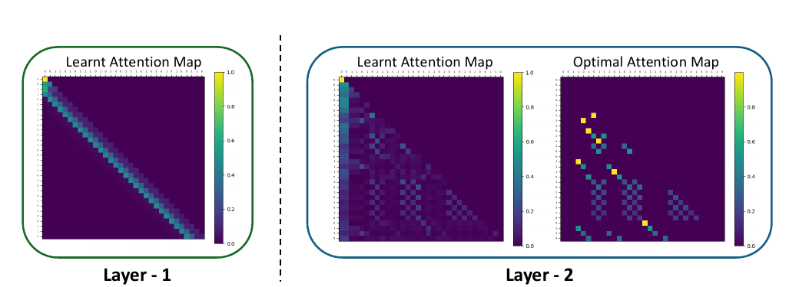

Figure 2
What One Cannot, Two Can: Two-Layer Transformers Provably Represent Induction Heads on Any-Order Markov Chains
单层做不到、双层可以：两层 Transformer 可在任意阶马尔可夫链上表示归纳头
作者图 2，三阶合成 Markov 链的训练注意力与理想归纳头模式对照；颜色表示注意力权重。图像不能证明高阶训练收敛。 来源：Chanakya Ekbote、Marco Bondaschi、Nived Rajaraman、Jason \(D\). Lee、Michael Gastpar、Ashok Vardhan Makkuva、Paul Pu Liang；Ekbote et al., arXiv:2508.07208v2, Figure 2, CC BY 4.0 (https://creativecommons.org/licenses/by/4.0/); crop excludes surrounding prose